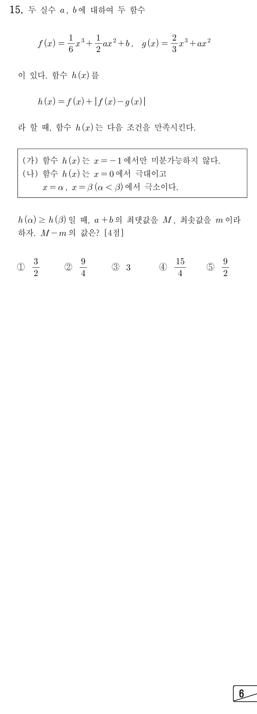

절댓값 안 의 부호로 벗기자. 0보다 작으면 라서 만 남아.
단축를 미리 계산해 두면 항이 지워져서 뒤의 증감 판단이 한 줄로 끝나.
판단이면 근처에서 가 다항함수 하나라 미분가능해. 그래서 (가)의 에서는 반드시 이어야 하는 거야.
인 에서 양쪽 미분계수 차이는 야. 즉 의 부호가 바뀌는 곳에서만 꺾이고, 같은 인수가 두 번 곱해져 부호가 안 바뀌는 곳은 매끄러워.
단축을 넣으면 괄호 안이 0이 되니 로 나누면 바로 묶여.
판단이면 의 부호가 바뀌는 곳이 말고 더 생겨서 (가)에 어긋나. 이면 같은 인수가 두 번 곱해진 중근이라 부호가 안 바뀌니 까지 포함하는 거야.
주의이차식이 에서 0이면 이 두 번 곱해져 에서 오히려 미분가능해져. 마지막 줄이 이 한 번만 곱해졌다는 근거라서, 에서 부호가 바뀌어 실제로 꺾이는 거야.
이차식은 항상 0보다 크거나 같으니 의 부호는 이 정해. 이차식이 0인 곳에서는 라 두 식의 값이 같아서 상관없어.
판단(나)에서 이 극대이려면 가 0의 왼쪽에서 양, 오른쪽에서 음이어야 해. 이면 에서 극소, 이면 라 극값이 없어서 둘 다 탈락이야.
에서는 이라 감소하다가 에서 증가로 바뀌니 이 극소야.
단축을 넣으면 이니 로 먼저 나누고, 남은 이차식도 에서 0이라 한 번 더 묶여.
판단이라 이니 부호는 가 정해. 여기에 판별식에서 얻은 를 함께 묶자.
주의㉠은 등호를 포함하니 도 들어가.
는 의 계수가 양수인 일차식이라 가 커질수록 커져. 그래서 범위의 양 끝에서 최대·최소가 정해지는 거야.
판단끝값도 원래 조건에 넣어 봐야 해. 에서는 말고 인 곳이 없어 (가)를 지키고, ㉠은 등호로 성립해.
주의이면 에서도 지만 가 두 번 곱해져 부호가 안 바뀌니 미분가능해. 그래서 (가)를 지키고 끝값 도 살아 있어.